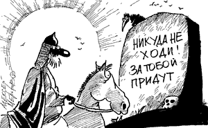

|

|
|
|
Рисунок Алексея Меринова
|
Для горожанина, измученного шумом, пробками и
стрессами,деревня — как сказка о здоровой и спокойной жизни.
Но статистика разбивает эту сказку вдребезги. “МК” ознакомился
с аналитической запиской Минздравсоцразвития, представленной в
думский Комитет по охране здоровья. Эту бумагу можно назвать
сенсационной.
Главная причина инвалидности и смерти на селе — туберкулез.
75%населения деревень уже инфицировано палочкой Коха, не
только человеческой, но и “бычьего типа”. Лечат туберкулез в
деревне“нерегулярно” и “неэффективно”, а диагностируют его
“неудовлетворительно”. Так говорится в документе. И умирают
селяне от туберкулеза в два раза чаще, чем горожане...
Умственно отсталых подростков (олигофренов и дебилов) в
деревне почти в 4 раза больше, чем в городе, а доля
школьников, активно потребляющих спиртные напитки, в 2—3 раза
выше, чем в городе. Среди всех учтенных в стране умственно
отсталых граждан 40% —деревенские жители. (А в деревне, между
прочим, у нас живет лишь около 27% россиян.)
Младенческая смертность на селе в прошлом году была на 24%
выше,чем в городе, — это напрямую связано с качеством и
доступностью медицинского обслуживания. Надо признать, что
государство изо всех сил старалось помочь скорейшему вымиранию
селян. В 90% “оставшихся в живых” фельдшерских пунктов нет
центрального отопления и канализации, в каждом четвертом нет
телефона (то есть вызвать “скорую” нельзя). Почти в каждой
10-й сельской участковой больнице нет ни одного врача. “Скорая
помощь” вроде бы есть (1200 отделений), но на самом деле ее
почти нет: не хватает машин, горючего, лекарств и
инструментов, признает Минздравсоцразвития.
Президент, конечно, пообещал усилить внимание к “первичному
звену” оказания медпомощи. Но повышение зарплат участковым
сельским врачам и фельдшерам едва ли сильно поможет делу... И
еще цифры напоследок: на 1000 деревенских пенсионеров уже
сейчас приходится 2000 пенсионерок — мужчины в селах
вымирают...
|